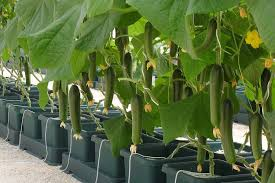
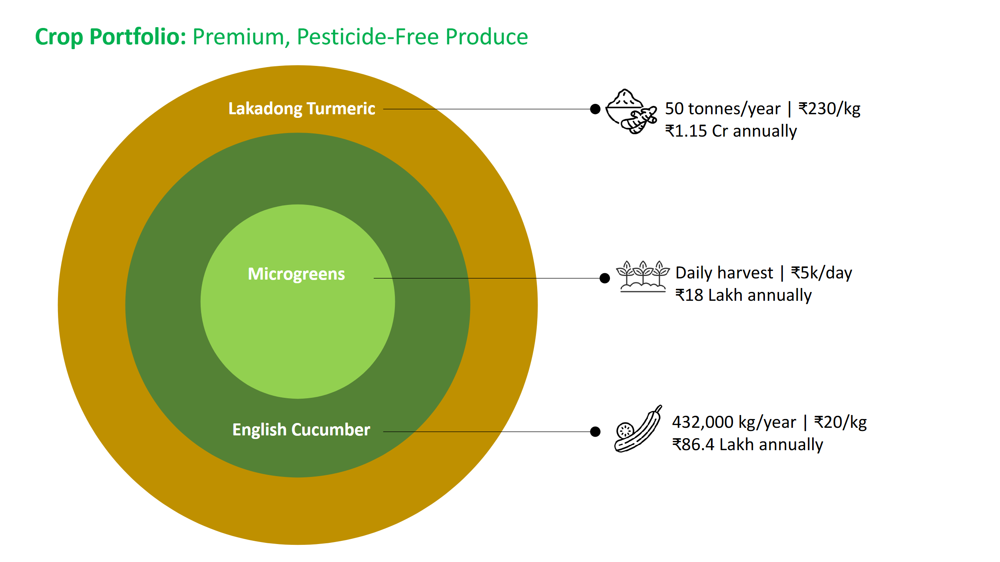

Our Crop & Infrastructure Portfolio
Our model combines short-cycle, high-frequency cash crops (hydroponic vegetables) with a premium spice line (Lakadong turmeric) to balance cash flow, diversify risk and scale sustainably.
Crop Portfolio — Summary & Indicative Value
| Crop | Area | Yield (per acre) | Annual Output | Indicative Value (₹/year) | Notes |
|---|---|---|---|---|---|
| English Cucumber (Hydroponic) | 2 acres | 216,000 kg | 432,000 kg | ₹ 2.59 Cr | Premium demand; Chennai metro |
| Microgreens | 1.25 acres | Rotational (daily) | Daily harvest | ₹ 1.00–1.25 Cr | High-margin, quick cycle |
| Leafy Greens | 0.5 acres | — | ~100,000 kg | ₹ 25 Lakh | Retail & HoReCa |
| Lakadong Turmeric (from Yr-3) | 6 acres | 8 MT | 48 MT | ₹ 1.10 Cr | High-curcumin, export grade |
| Steady-state total (indicative): ~₹ 4.9–5.2 Cr / year (market-linked; subject to price/yield variance). | |||||



Infrastructure Snapshot
4 acres Polyhouse (controlled)
1.25 acres Greenhouse
Drip & Fertigation Automation
Packhouse & Grading
Solar-assisted Power
Rainwater Harvesting
“Diverse crops, one sustainable vision — combining technology, taste, and traceability.”

Advisory & Market Partners
- Advisory (in discussion): Senior officials from Mission Lakadong (Meghalaya) and Tamil Nadu Agricultural University (TNAU) for varietal, agronomy and value-addition guidance.
- Protected-cultivation support: Agritech consultants network for hydroponics, fertigation and climate control.
- Market access: Quick-commerce and modern retail channels (e.g., Zepto, Blinkit, Swiggy Instamart) for vegetables; spice traders & nutraceutical buyers for Lakadong.
Certifications & Quality Practices
- FSSAI-compliant handling; graded, hygienic packing.
- Periodic lab testing for residues & curcumin (Lakadong).
- Traceable batch system; organic certification roadmap post-restoration.
Sustainability Highlights
- Solar-assisted power and energy-efficient operations.
- Hydroponic loop reduces water footprint; rainwater reuse.
- Soil regeneration practices for open-field turmeric.
- Direct employment for 20+ local workers at steady state.
Project Timeline (post-investment)
Day 0: Investment received; procurement & contractor mobilisation.
Day 1–90: Polyhouse/greenhouse refurbishment, fertigation & electrical re-installs; Lakadong nursery established in protected area.
Day 30: Microgreens revenue starts (daily harvest & dispatch).
Month 4–6: Hydroponic vegetable production stabilises; cucumber & leafy supply ramps up.
Month 7: First cheque from Lakadong (nursery→field cycle; early batch monetisation).
Month 12: Steady-state run-rate; scale up Lakadong acreage and B2B buyer base.